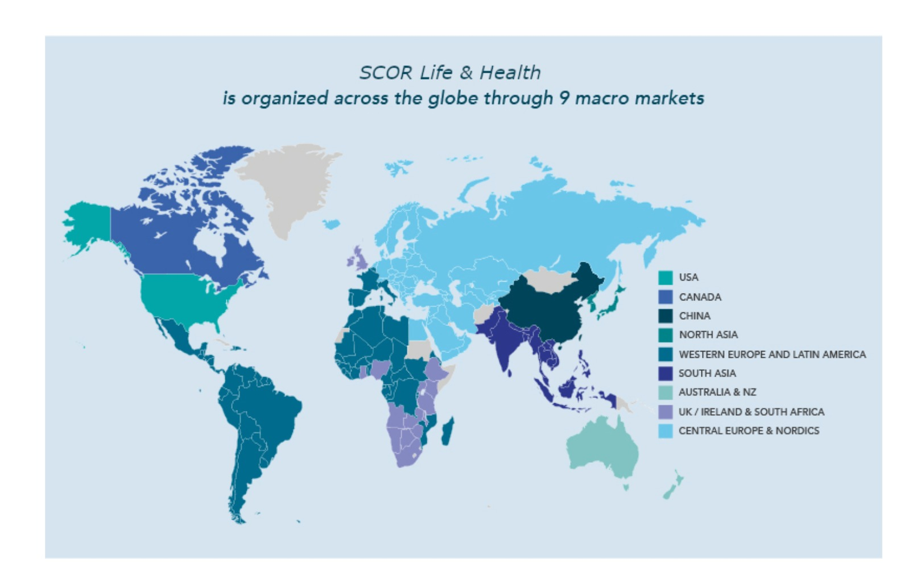
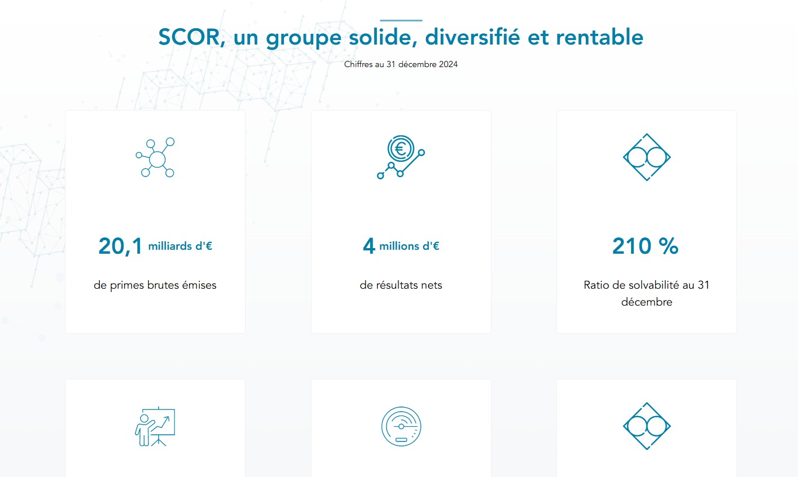
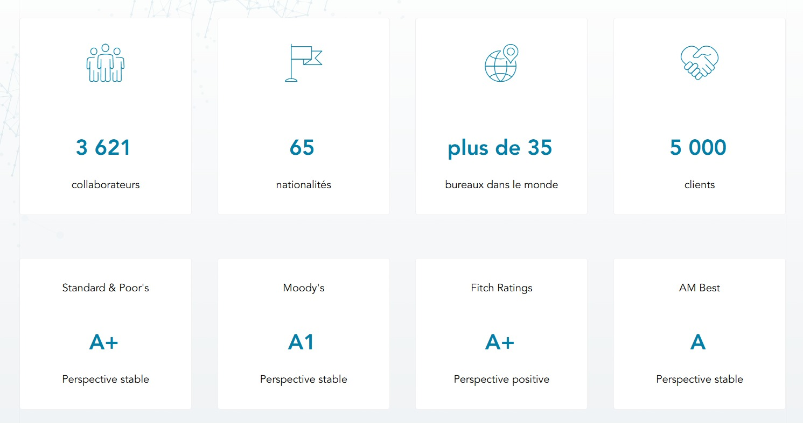
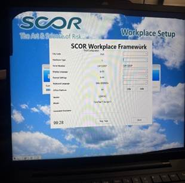
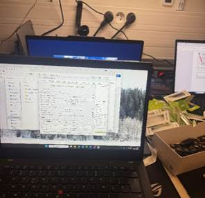
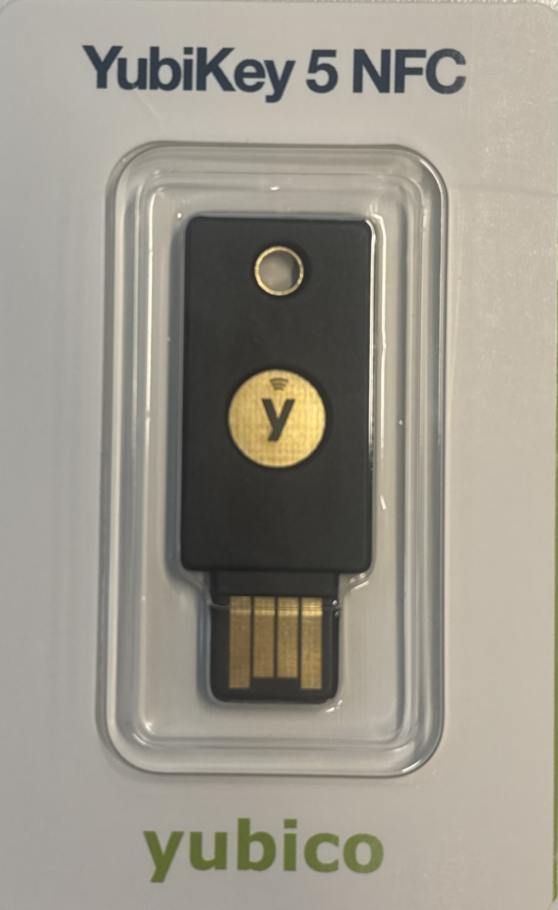
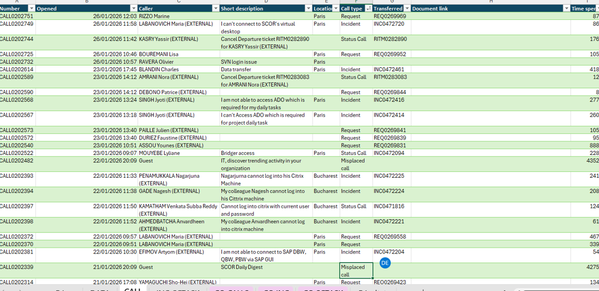
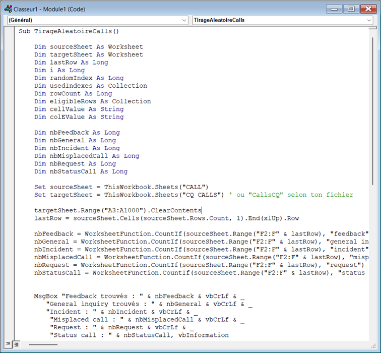

Rapport de Stage
BTS SIO 1ère année
1. Remerciements
Je tiens à remercier l'équipe informatique de SCOR pour leur accueil chaleureux et leur accompagnement tout au long de ce stage, qui m'a permis de découvrir les réalités du support technique en entreprise et de développer des compétences essentielles pour ma formation en BTS SIO.
2. Présentation de l'organisme d'accueil
2.1. Identification de l'entreprise
SCOR est un groupe international de réassurance présent dans plusieurs pays. SCOR est caractérisé par une organisation très structurée et de fortes exigences en matière de conformité et de sécurité. J'étais intégrée au service informatique, au sein du département IT SUPPORT, dans un environnement à la fois rigoureux et orienté vers l'international.
Ce stage était très différent du premier, et c'est justement ce qui le rend intéressant : il m'a permis de découvrir une autre facette de l'informatique, plus orientée vers le support, la sécurité, la traçabilité et l'uniformisation du parc informatique.
Le groupe accompagne les assureurs dans la gestion de leurs risques à travers deux activités principales :
- Réassurance Vie & Santé : protection des risques liés à la longévité, mortalité et santé
- Réassurance Dommages & Responsabilité : couverture des risques naturels, industriels et responsabilité civile
📍 Dénomination : SCOR SE (Société Européenne)
🏢 Forme juridique : Société Européenne cotée en bourse (Euronext Paris)
📍 Siège social : 5 avenue Kléber, 75016 Paris, France
🌍 Présence mondiale : 38 bureaux répartis sur les 5 continents
👥 Effectifs : Plus de 3 000 collaborateurs dans le monde
📊 Taille : Grande entreprise (+ de 250 collaborateurs)
💰 Chiffre d'affaires : Environ 18 milliards d'euros de primes brutes émises
💼 Secteur d'activité : Assurance et réassurance internationale (Code NAF : 6520Z)

Présence mondiale de SCOR

Chiffres clés de SCOR

Performance et indicateurs SCOR
2.2. Historique de SCOR
SCOR possède une histoire riche qui témoigne de son évolution continue dans le secteur de la réassurance :
- 1970 : Création de SCOR (Société Commerciale de Réassurance)
- 1989 : Introduction en bourse à Paris
- Années 1990 : Expansion internationale en Asie, Amérique et Europe
- 2008 : SCOR devient une Société Européenne (SE)
- 2016-2026 : Transformation digitale et adaptation aux nouveaux risques (cyber, climatique, pandémie)
2.3. Politique RGPD
En tant qu'entreprise internationale traitant des données sensibles (informations sur les assurés, données médicales, données financières), SCOR applique une politique stricte de conformité au Règlement Général sur la Protection des Données (RGPD).
Les pratiques principales observées :
- Authentification multifactorielle (MFA) avec YubiKey : Sécurisation de l'accès aux systèmes critiques
- DPO (Data Protection Officer) : Délégué à la protection des données supervisant la conformité
- Formation du personnel : Sensibilisation régulière des collaborateurs aux bonnes pratiques de sécurité et de confidentialité
2.4. Responsabilité Sociétale de l'Entreprise (RSE)
SCOR s'engage activement dans une démarche de Responsabilité Sociétale des Entreprises, intégrant des préoccupations environnementales, sociales et éthiques dans ses activités :
- Environnement : Engagement pour la neutralité carbone, télétravail encouragé, investissements responsables et bâtiments certifiés
- Social : Diversité et inclusion, formation continue, qualité de vie au travail et accueil de stagiaires
- Gouvernance : Éthique des affaires, transparence et lutte contre la corruption
SCOR est signataire des Principes pour une Assurance Responsable des Nations Unies.
2bis. Analyse SWOT de SCOR
Analyse stratégique de l'entreprise.
Forces
- Leader mondial de la réassurance
- Excellente solidité financière
- Présence internationale diversifiée
- Expertise technique reconnue
* Faiblesses
- Exposition aux catastrophes naturelles
- Complexité organisationnelle
- Coûts opérationnels élevés
Opportunités
- Marchés émergents en croissance
- Transformation digitale
- Nouveaux risques (cyber, climatiques)
- Intelligence artificielle et Big Data
Menaces
- Augmentation des catastrophes naturelles
- Instabilité économique mondiale
- Concurrence accrue
3. Gestion des tickets
📌 Outil central : ServiceNow
ServiceNow est la base de tous les écrans utilisés dans l'entreprise. Tous les tickets, l'inventaire du parc informatique et les backlogs sont gérés via cet outil de ticketing. Il permet une traçabilité complète de toutes les interventions.
4. Missions réalisées
Ma mission principale consistait à préparer et mettre en conformité des postes informatiques sous Windows 11. Concrètement, je devais : vérifier les mises à jour système ; contrôler le BIOS lorsque c'était nécessaire ; et appliquer les standards internes de l'entreprise et préparer les postes pour leur mise à disposition aux utilisateurs.
C'est la procédure de masterisation.
Qu'est-ce qu'un master ?
La masterisation est un processus clé dans la gestion informatique des entreprises. Elle consiste à créer des masters prêts à l'emploi pour les postes de travail informatiques. Ces masters sont des images système qui incluent le système d'exploitation et les logiciels nécessaires.
Cela garantit :
- Uniformité : Les masters restent identiques quel que soit le matériel utilisé
- Flexibilité : L'ajout de nouveaux matériels n'oblige jamais à refaire les masters
- Automatisation : L'installation fonctionne sur tout type d'ordinateur, ce qui facilite les déploiements massifs
🌍 Réalisation de masters pour bureaux internationaux
J'ai aussi participé à la création ou à la mise à jour de masters pour différents bureaux internationaux, comme Bucarest, Casablanca ou Amsterdam.
Cela m'a montré qu'au sein d'un groupe international, il est essentiel de garantir une cohérence technique entre les différents sites, afin que les postes soient préparés selon des standards communs.
- BUH – Bucarest (Roumanie)
- CAS – Casablanca (Maroc)
- AMD – Amsterdam (Pays-Bas)

Processus de masterisation des laptops SCOR

Configuration et déploiement des masters
J'ai également observé l'outil de suivi des tickets afin de garantir la traçabilité :
- Ajout/modification du numéro de série
- Mise à jour du statut (ex : "en stock", "en préparation", "attribué"...)
- Mise à jour de la localisation (ex : stock / salle)
L'objectif est que l'équipe support puisse savoir où est le matériel et dans quel état il se trouve, sans perdre de temps.
Une autre mission importante a été la configuration de clés YubiKey dans le cadre de la double authentification, ou 2FA. Le principe est d'ajouter une étape de sécurité supplémentaire en plus du mot de passe, afin de mieux protéger l'accès aux comptes. J'en ai configuré environ 300, en suivant une procédure précise. Cette mission m'a permis de mieux comprendre les enjeux liés à la sécurisation des accès, à la protection contre le phishing et, plus largement, à la cybersécurité en entreprise.

Clés YubiKey pour l'authentification multifactorielle
Enfin, j'ai développé une macro VBA sur Excel pour automatiser le comptage de tickets par catégorie(feedback, general inquiry, incident, misplaced call, request et status call). Avant cela, ce comptage était réalisé manuellement, ce qui prenait du temps et pouvait générer des erreurs. La macro permettait d'obtenir automatiquement un résumé, de manière plus rapide et plus fiable.

Interface de la macro Excel pour le suivi des tickets

4bis. Difficultés rencontrées et compétences acquises
Ce que j'ai aimé dans ce stage
Ce que j'ai particulièrement apprécié dans ce stage, c'est la dimension internationale, parce qu'on voit que les actions réalisées localement ont un impact dans une organisation beaucoup plus large. J'ai également trouvé intéressant le lien très concret entre informatique et sécurité, notamment avec la mise en conformité des postes et la configuration des YubiKey.
Compétences acquises
Ce stage m'a permis de développer de nombreuses compétences techniques et professionnelles :
💻 Compétences techniques
- Maîtrise des processus de déploiement et de masterisation Windows
- Gestion d'un parc informatique avec outil de ticketing (ServiceNow)
- Configuration et déploiement de solutions de sécurité (YubiKey, MFA)
- Initiation à la programmation VBA et automatisation Excel
- Diagnostic et résolution d'incidents techniques
🎯 Compétences professionnelles
- Rigueur dans la documentation et le suivi des interventions
- Travail en équipe et communication avec les utilisateurs
- Autonomie dans la résolution de problèmes
- Organisation et méthode dans le travail répétitif
- Compréhension des enjeux de conformité et de standardisation en entreprise
- Gestion de projets à grande échelle
5. Conclusion
Ce stage chez SCOR m'a offert une expérience enrichissante et formative dans un environnement professionnel exigeant. À travers les missions de masterisation, de configuration de sécurité et d'automatisation, j'ai acquis une compréhension profonde des enjeux liés à l'infrastructure IT et à la cybersécurité en entreprise.